컴퓨터응용밀링기능사 (2012-04-08 기출문제)
1과목: 기계재료 및 요소
1. 순철의 개략적인 비중과 용융온도를 각각 나타낸 것은?
- 8.96, 1083℃
- 7.87, 1538℃
- 8.85, 1455℃
- 19.26, 3410℃
(정답률: 63%)

2. 탄소 2~2.6%, 규소 1.1~1.6% 범위의 것으로 백주철을 열처리로에 넣어 가열하여 탈탄 또는 흑연화 방법으로 제조한 주철은?
- 칠드주철
- 가단주철
- 합금주철
- 회주철
(정답률: 58%)
3. 구리에 대한 설명 중 옳지 않은 것은?
- 전연성이 좋아 가공이 쉽다.
- 화학적 저항력이 작아 부식이 잘된다.
- 전기 및 열의 전도성이 우수하다.
- 광택이 아름답고 귀금속적 성질이 우수하다.
(정답률: 80%)
4. 알루미나(Al2O3)를 주성분으로 하여 거의 결합재를 사용하지 않고 소결한 공구로서 고속도 및 고온절삭에 사용되는 공구는?
- 다이아몬드
- 세라믹
- 스텔라이트 공구
- 초경합금
(정답률: 62%)
5. 표준 성분이 Cu 4%, Ni 2%, Mg 1.5%, 나머지가 알루미늄인 내열용 알루미늄 합금의 한 종류로써 열간 단조 및 압출가공이 쉬워 단조품 및 피스톤에 이용되는 것은?
- Y합금
- 하이드로날륨
- 두랄루민
- 알클래드
(정답률: 67%)
6. 공구용으로 사용되는 비금속 재료로 초내열성재료, 내마멸성 및 내열성이 높은 세라믹과 강한 금속의 분말을 배열 소결하여 만든 것은?
- 다이아몬드
- 서멧
- 석영
- 고속도강
(정답률: 69%)
7. 강의 표면 경화법에서 화학적 방법이 아닌 것은?
- 침탄법
- 질화법
- 침탄 질화법
- 고주파 경화법
(정답률: 66%)
8. 두 축이 같은 평면 내에 있으면서 그 중심선이 어느 각도로 교차하고 있을 때 사용하는 축 이음으로 자동차, 공작기계 등에 사용되는 것은?
- 플렉시블 커플링
- 플랜지 커플링
- 유니버설 커플링
- 셀러 커플링
(정답률: 52%)
9. 원통 마찰차의 접선력을 Fkgf, 원주속도 v m/s라 할 때, 전달동력 H(kW)를 구하는 식은?(단, 마찰계수는 μ 이다.)
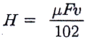
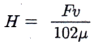
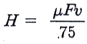
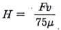
(정답률: 36%)
10. 소선의 지름 8mm, 스프링의 지름 80mm인 압축코일 스프링에서 하중이 200N 작용하였을 때 처짐이 10mm가 되었다. 이 때 스프링 상수(k)는 몇 N/mm인가?
- 5
- 10
- 15
- 20
(정답률: 50%)
11. 기어의 원주피치를 구할 때 필요 없는 요소는?
- 원주율(π)
- 지름피치
- 잇수
- 피치원의 지름
(정답률: 49%)
12. 볼트 너트의 풀림 방지 방법 중 틀린 것은?
- 로크 너트에 의한 방법
- 스프링 와셔에 의한 방법
- 플라스틱 플러그에 의한 방법
- 아이 볼트에 의한 방법
(정답률: 47%)
13. 엔드 저널에서 지름 40mm의 전동축을 받치고 있는 베어링의 압력은 5 N/㎟ 이고 저널길이를 100mm 라고 할 때 베어링의 하중은 몇 kN인가?
- 15kN
- 20kN
- 25kN
- 30kN
(정답률: 61%)
14. 볼나사에 대한 설명으로 틀린 것은?
- 자동체결이 자유롭다.
- 백래시를 적게 할 수 있다.
- 나사의 효율이 90% 이상이다.
- 금속과 금속의 마찰작용에 의한 구름접촉을 이용한다.
(정답률: 44%)
15. 키의 전단응력이 35 N/mm2이고, 키의 유효 길이가 40mm, 축과 보스의 경계면에 작용하는 접선력은 3000N 일 때 키의 너비는 약 몇 mm인가?(오류 신고가 접수된 문제입니다. 반드시 정답과 해설을 확인하시기 바랍니다.)
- 1.6mm
- 1.8mm
- 2.2mm
- 2.8mm
(정답률: 48%)
2과목: 기계제도(절삭부분)
16. KS 재료기호에서 용접 구조용 압연강재의 기호는?
- SPP 380
- SM 570
- STC 140
- SC 360
(정답률: 45%)
17. 다음 도면에서 (A)의 치수값은 얼마인가?
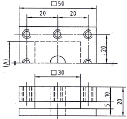
- 10
- 20
- 30
- 40
(정답률: 57%)
18. 그림과 같은 V-벨트 풀리의 호칭 지름(피치원 지름) 값은?
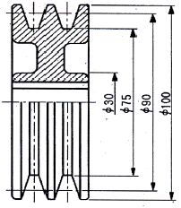
- ø30
- ø75
- ø90
- ø100
(정답률: 53%)
19. 다음 동력원의 기호 중 공압을 나타내는 것은?
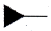
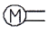
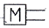
(정답률: 55%)
20. 대칭형인 대상물을 외형도의 절반과 온단면도의 절반을 조합하여 표시한 단면도는?
- 계단 단면도
- 한쪽 단면도
- 부분 단면도
- 회전 단면도
(정답률: 66%)
21. 사용자에게 물품의 구조, 기능, 성능 등을 설명하기 위한 도면으로 주로 카탈로그에 사용하는 도면은?
- 조립도
- 설명도
- 승인도
- 주문도
(정답률: 82%)
22. 치수보조 기호로 사용되는 "C"에 대한 설명으로 맞는 것은?
- 45° 모떼기 치수의 치수 수치 앞에 붙인다.
- 이론적으로 정확한 치수를 의미한다.
- 각의 꼭지점에서 가로, 세로 길이가 서로 다를 때에도 사용한다.
- 참고 치수임을 의미한다.
(정답률: 79%)
23. 표면 거칠기의 지시 기호 중 가공에 의한 줄무늬 방향이 지시된 것은?
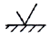
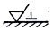
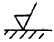
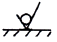
(정답률: 61%)
24. 끼워 맞춤 기호의 치수 기입에 관한 것이다. 바르게 기입된 것은?
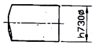
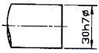
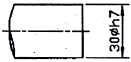
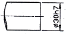
(정답률: 77%)
25. 기하 공차 기호에서 자세 공차에 해당하는 것은?
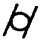
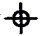
(정답률: 58%)
26. 다음과 같은 숫돌바퀴의 표시에서 숫돌입자의 종류와 결합도를 표시한 것은?
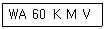
- WA, 60
- WA, K
- M, 60
- M, V
(정답률: 68%)
27. 3차원 측정기를 이용한 측정의 사용효과로 거리가 먼 것은?
- 피측정물의 설치 변경에 따른 시간이 절약된다.
- 보조 측정기구가 거의 필요하지 않다.
- 측정점의 데이터는 컴퓨터에 의해 처리가 신속 정확하다.
- 단순한 부품의 길이측정으로 생산성이 향상된다.
(정답률: 50%)
28. 다수의 절삭날을 일직선상에 배치한 공구를 사용해서 공작물 구멍의 내면이나 표면을 여러 가지 모양으로 절삭하는 공작기계로 적당한 것은?
- 브로칭 머신
- 슈퍼 피니싱
- 호빙 머신
- 슬로터
(정답률: 43%)
29. 일반적으로 줄(file)의 재질은 어떤 것을 사용하는가?
- 탄소 공구강
- 고속도강
- 다이스강
- 초경질 합금
(정답률: 53%)
30. 공작기계의 구비조건이 아닌 것은?
- 높은 정밀도를 가질 것
- 가공능력이 클것
- 내구력이 작을 것
- 고장이 적고, 기계효율이 좋을 것
(정답률: 85%)
3과목: 기계공작법
31. 선반 작업에서 방진구를 사용하는 가장 큰 이유는?
- 센터를 쉽게 잡기 위해
- 공작물의 이탈을 방지하기 위해
- 공작물의 이송을 부드럽게 하기 위해
- 가늘고 긴 공작물을 가공 시 떨림을 방지하기 위해
(정답률: 72%)
32. 저탄소 강재를 선반에서 가공할 때 절삭저항 3 분력 중 가장 큰 것은?
- 주분력
- 배분력
- 이송분력
- 횡분력
(정답률: 65%)
33. 다음 그림에서 테이퍼(Taper) 값이 1/8 일 때 A 부분의 직경 값은 얼마인가?
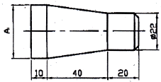
- 25
- 27
- 30
- 32
(정답률: 44%)
34. 절삭 공구의 절삭면과 평행한 여유면에 가공물의 마찰에 의해 발생하는 마모는?
- 크레이터 마모
- 플랭크 마모
- 온도 파손
- 치 핑
(정답률: 57%)
35. 다음 중 밀링머신의 부속 장치가 아닌 것은?
- 아버
- 회전 테이블 장치
- 수직축 장치
- 왕복대
(정답률: 54%)
36. 연통원삭에서 바깥지름 연삭방식에 해당하지 않는 것은?
- 유성형
- 플런지 컷형
- 숫돌대 왕복형
- 테이블 왕복형
(정답률: 45%)
37. 밀링 절삭조건을 맞추는데 고려할 사항이 아닌 것은?
- 밀링의 성능
- 커터의 재질
- 공작물의 재질
- 고정구의 크기
(정답률: 57%)
38. 보통선반의 크기를 나타내는 것으로만 조합된 것은?
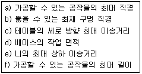
- b, c
- d, e
- b, f
- a, f
(정답률: 59%)
39. 다음 특수가공법 중 가공물 표면에 공작액과 미세 연삭입자의 혼합물을 고속으로 분사하여 매끈한 다듬질면을 얻는 방법은?
- 액체 호닝(liquid honing)
- 버니싱(burnishing)
- 버핑(buffing)
- 숏 피닝(shot peening)
(정답률: 72%)
40. 밀링머신에서 일반적으로 평면을 절삭할 때 주로 사용하는 공구가 아닌 것은?
- 정면커터
- 엔드밀
- 메탈 쏘
- 셀 엔드밀
(정답률: 58%)
4과목: CNC공작법 및 안전관리
41. 완전윤활 또는 후막윤활이라고 하며, 슬라이딩 면이 유막에 의해 완전히 분리되어 균형을 이루게 되는 윤활방법은?
- 경계 윤활
- 유체 윤활
- 극압 윤활
- 고체 윤활
(정답률: 50%)
42. 축을 가공한 후 일정한 치수 내에 들어있는지를 검사하고자 한다. 가장 적당한 게이지는?
- 스냅 게이지
- 플러그 게이지
- 테보 게이지
- 센터 게이지
(정답률: 33%)
43. CNC선반에서 3초 동안 이송을 정지(dwell)시키고자 한다. ( ) 안에 알맞는 것은?
- 3.0
- 30
- 300
- 3000
(정답률: 51%)
44. CNC 공작기계 가공에서 유의사항으로 틀린 것은?
- 소숫점 입력 여부를 확인한다.
- 좌표계 설정이 맞는가 확인한다.
- 보안경을 착용한다.
- 작업복을 착용하지 않아도 된다.
(정답률: 86%)
45. CNC의 서버 기구 형식이 아닌 것은?
- 개방형(Open loop system)
- 반개방형(Semi-open loop )
- 폐쇄형(Closed loop system)
- 반폐쇄형(Semi-closed loop system)
(정답률: 70%)
46. 머시닝센터 프로그램에서 그림의 A(15.5)에서 B(5,15)로 가공할 때의 프로그램으로 바르지 못한 내용은?
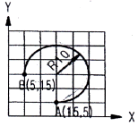
- G90 G03 X5. Y15. J-10. ;
- G90 G03 X5. Y15. R-10. ;
- G90 G03 X-10. Y10. J10. ;
- G90 G03 X-10. Y10. R-10. ;
(정답률: 26%)
47. CNC 선반에서 그림과 같이 지름이 40mm인 공작물을 G96 S314 M03 ; 블록으로 가공할 때, 주축 회전수는?
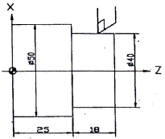
- 1500 rpm
- 2000 rpm
- 2500 rpm
- 3000 rpm
(정답률: 48%)
48. CNC프로그램에서 보조기능에 대한 설명 중 맞는 것은?
- M⑤는 주축의 정회전을 의미한다.
- M03은 주축의 역회전을 의미한다.
- M02는 프로그램의 시작을 의미한다.
- M00은 프로그램의 정지를 의미한다.
(정답률: 65%)
49. CNC 공작기계가 자동 운전 도중에 갑자기 멈추었을 때의 조치 사항으로 잘못된 것은?
- 비상 정지 버튼을 누른 후 원인을 찾는다.
- 프로그램의 이상 유무를 하나씩 확인하여 원인을 찾는다.
- 강제로 모터를 구동시켜 프로그램을 실행시킨다.
- 화면상의 경보(Alarm) 내용을 확인한 후 원인을 찾는다.
(정답률: 82%)
50. 다음 머시닝센터 프로그램에서 F200 이 의미하는 것은?
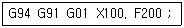
- 0.2mm/rev
- 200 mm/rev
- 200 mm/min
- 200 m/min
(정답률: 48%)
51. CNC 선반에서 나사의 호칭지름이 32mm이고, 피치가 1.5mm인 2줄 나사를 가공할 때의 이송량(F값)으로 맞는 것은?
- 1.5
- 2.0
- 3.0
- 32
(정답률: 71%)
52. 밀링 가공할 때 유의해야 할 사항으로 틀린 것은?
- 기계를 사용하기 전에 윤활 부분에 적당량 윤활유를 주입한다.
- 측정기 및 공구를 작업자가 쉽게 찾을 수 있도록 밀링머신 테이블 위에 올려 놓아야 한다.
- 밀링 칩은 예리하므로 직접 손을 대지 말고 청소용 솔등으로 제거한다.
- 정면커터로 가공할 때는 칩이 작업자의 반대쪽으로 날아가도록 공작물을 이송한다.
(정답률: 81%)
53. 그림과 같이 M10 탭가공을 위한 프로그램을 완성시키고자 한다. ( )속에 차례로 들어갈 값으로 옳은 것은?(단, M10 탭의 피치는 1.5)
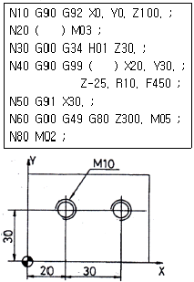
- S200, G74
- S300, G84
- S400, G85
- S500, G76
(정답률: 44%)
54. 다음 중 CAD/CAM 시스템의 출력장치로 볼 수 없는 것은?
- 모니터
- 라이트 펜
- 프린터
- 플로터
(정답률: 69%)
55. CNC 지령 중 기계 원점 복귀 후 중간 경유점을 거쳐 지정된 위치로 이동하는 준비 기능은?
- G27
- G28
- G29
- G32
(정답률: 31%)
56. 다음은 CNC 선반 프로그램의 일부이다. 설명으로 틀린 것은?
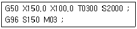
- G50 좌표계 설정을 뜻한다.
- X150.0 Z100.0은 기계원점부터 바이트 끝까지의 거리이다.
- S2000은 주축 최고 회전수이다.
- S150은 절삭속도가 150m/min이다.
(정답률: 46%)
57. 다음과 같은 CNC 선반 프로그램의 설명으로 틀린 것은?
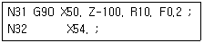
- G90은 내ㆍ외경 절삭 사이클이다.
- 테이퍼 절삭을 한다.
- N32 블록에서도 사이클이 계속된다.
- 외경(바깥지름) 절삭 작업을 하는 프로그램이다.
(정답률: 27%)
58. CNC 공작기계를 사용하여 제품을 생산할 때 경제성이 가장 좋은 경우는?
- 부품형상이 복잡하고 다품종 소량 생산인 경우
- 부품형상이 복잡하고 다품종 대량 생산인 경우
- 부품형상이 단순하고 단품종 중량 생산인 경우
- 부품형상이 단순하고 단품종 대량 생산인 경우
(정답률: 36%)
59. 정확한 거리의 이동이나 공구 보정시에 사용되며 현 위치가 좌표계의 기준이 되는 좌표계는?
- 상대 좌표계
- 기계 좌표계
- 공작물 좌표계
- 기계 원점 좌표계
(정답률: 53%)
60. 머시닝센터에서 그림과 같이 1번 공구를 기준공구로 하고 G43을 이용하여 길이 보정을 하였을 때 옳은 것은?
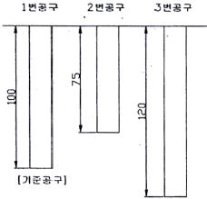
- 2번 공구의 길이 보정값은 75 이다.
- 2번 공구의 길이 보정값은 -25이다.
- 3번 공구의 길이 보정값은 120 이다.
- 3번 공구의 길이 보정값은 -45 이다.
(정답률: 69%)